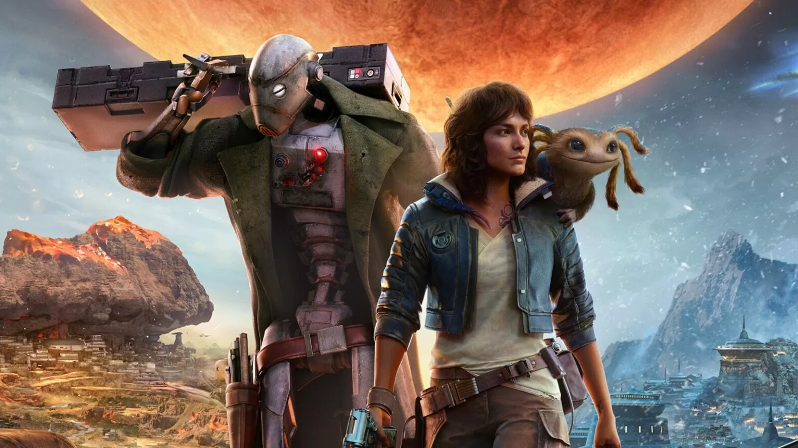
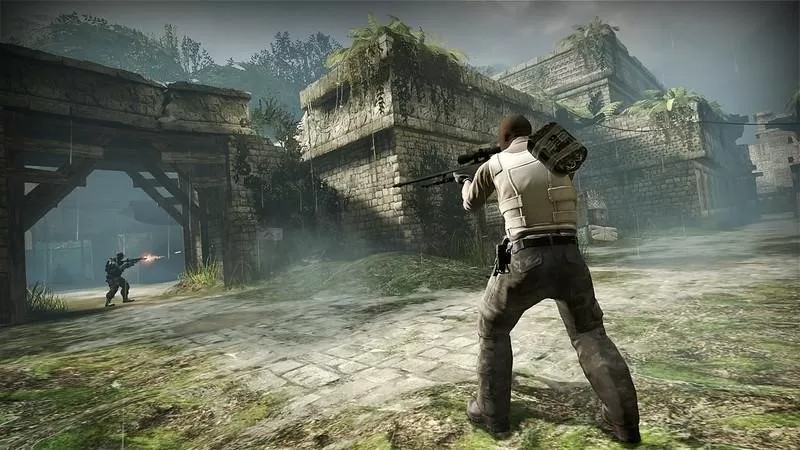

Star Wars Outlaws: Jogo da Ubisoft ganha o seu primeiro trailer.
Jogo será lançado durante o ano de 2024.
Meses após as notícias sobre o seu desenvolvimento, o jogo Star Wars Outlaws finalmente voltou a ganhar novidades. E desta vez, como já era esperado pelo público, o seu primeiro trailer foi oficialmente divulgado um dia antes do Ubisoft Forward durante o Xbox Showcase.
Ler mais

As configurações do CS GO que fazem de você um jogador melhor.
O jogo do gênero de tiro em primeira pessoa, multiplayer, e seu nome é Counter-Strike: Global Offensive (CS:GO). CS: GO, a quarta parcela da série Counter-Strike, foi lançada em 2012 e reescreve completamente as regras para ação em equipe e jogabilidade FPS. Mesmo jogos conhecidos como Rainbow Six Siege, PUBG e outros o usaram como inspiração.
Ler mais